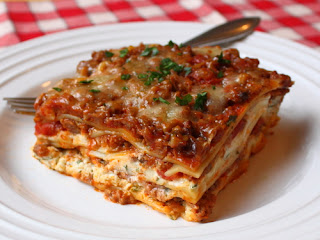

Lasagna Recipe

Description
It is well-known that Garfield's favourite dish is lasagna. And who could blame him?
It is the perfect balance of pasta, sauce, and cheese. When made just right, it can
provide the perfect cheese stretch with every bite. Plus, it makes enough for the whole
family with plenty of leftovers! Lasagna freezes so well that you'd almost never know
that it wasn't freshly made that day. Definitely S-tier level food. This recipes is
from Chef John's website Food Wishes.
Ingredients
- 1 lb Italian sausage
- 1 1/2 pound lean ground beef
- 8 oz mushrooms, chopped
- 1 teaspoon salt
- 1/2 freshly ground black pepper
- 1/4 teaspoon red pepper flakes
- 6 cups marinara sauce
- 1/2 cup water
- 2 egg, beaten
- 2 lbs ricotta cheese
- 8 oz mozzarella cheese, cubed
- 2/3 cup freshly grated Reggiano-Parmigiano
- 1/4 cup chopped fresh parsley
- 1 teaspoon salt
- 1/4 teaspoon freshly ground black pepper
- big pinch of cayenne
- 1 lb lasagna noodles
- 8 oz mozzarella cheese, torn in small pieces
- 1/2 cup grated Parmesan cheese to top
Steps
- Make the sauce.
- Pour marinara sauce into meat mixture.
- Make the pasta.
- Make the filling.
- Preheat the oven to 375 degrees F (190 degrees C).
- Divide sauce, noodles, and filling. Layer them.
- Cover baking dish with aluminum foil and place dish on a baking sheet.
- Bake for 30 minutes. Remove foil and bake for 30 to 35 more minutes.
- Let sit for 20 minutes before serving.